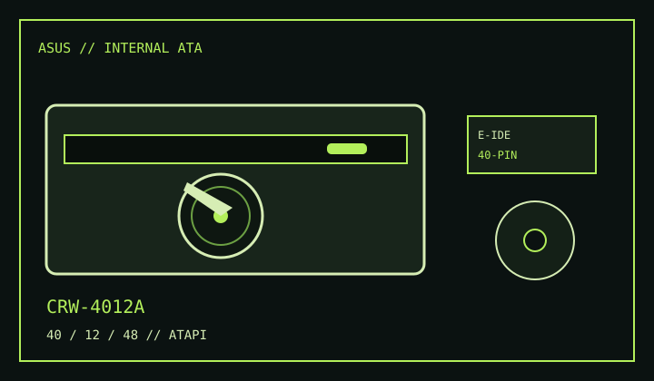

[ CD-R AND CD-RW DRIVES // IDENTIFIED MODEL ]
ASUS CRW-4012A
The CRW-4012A is an internal ATAPI writer rated 40× CD-R, 12× CD-RW and 48× CD read.

IDENTIFICATION: The ASUS CRW-4012A is a distinct 40×/12×/48× SKU; verify the complete model label before applying firmware or media guidance.
Documented specifications
| Exact model | ASUS CRW-4012A |
|---|---|
| CD-R write | Up to 40× |
| CD-RW rewrite | Up to 12× |
| CD read | Up to 48× |
| Supported media | Writes CD-R and CD-RW; reads CD-ROM and supported audio/data Compact Disc media. Disc format and session access can require compatible software. |
| Interface / bay | Internal E-IDE/ATAPI, 5.25-inch half-height optical bay. |
| Host compatibility | Use an IDE/ATAPI-capable host and authoring software that supports this recorder. Check the ASUS manual's system and DMA requirements before installing on a legacy system. |
| Firmware / jumper | Use CRW-4012A-specific firmware only and record the current version. Select Master, Slave or Cable Select as documented for the unit and match the IDE channel; do not assume a nearby ASUS model uses the same jumper block. |
Compatibility and preservation
- Maximum speeds depend on blank media certification, recording mode and software support.
- Record the unit label, firmware, IDE host, jumper setting, media code and verification results.
- Keep verified disc images with checksums and avoid cross-flashing firmware from other ASUS recorders.
Manufacturer and manual references
- ASUS CRW-4012A official support and manual pageManufacturer-hosted model documentation locator.
- ASUS CRW-4012A 40×/12×/48× user manualModel-specific installation and operation manual copy.